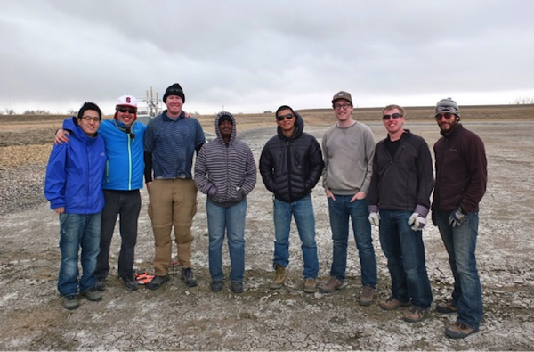

News
-
GEM Center Researchers Bound for Australia in Search of Groundwater for Remote Aboriginal Villages
Graduate student Denys Grombacher and Postdoc Andy Parsekian were recently awarded a grant from Geoscientists Without Borders (GWB) to conduct geophysical measurements in South Australia in hopes of improving water security for remote Aboriginal villages. Residents of the Anangu Pitjantjatjara Yankunytjatjara (APY) Lands of South Australia live in an extremely remote and arid environment where access to potable water is of critical importance. The team, which consists of researchers from the Stanford GEM Center, CSIRO and the University of Adelaide, will conduct geophysical surveys to quantify and locate groundwater resources surrounding several communities in the APY lands. The direct humanitarian benefit will be information to guide local water management decisions about available groundwater volume and quantity as well as suggested locations for future well installation. GWB is a program within the Society of Exploration Geophysicists (SEG) Foundation that seeks to fund applications of geoscience with humanitarian goals.
-
Near-Surface Geophysics Class Goes to Colorado
In the Spring of 2013, students from the GP190 Near-Surface Geophysics class had a unique opportunity to visit an aquifer recharge and recovery (ARR) facility in Colorado to gain experience making field geophysical measurements. Led by the course instructor, Andy Parsekian and TA, Denys Grombacher, a mixed group of undergraduate and graduate students spent several days making electrical and electromagnetic geophysical measurements to characterize heterogeneity in the subsurface at the site. The results of this effort have been incorporated into a larger geophysical database associated with ongoing research related to the multi-institution NSF-funded ReNUWIt Engineering Research Center (ERC). This field trip was generously funded by the Department of Geophysics.
Field trip participants standing in a basin used to recharge the underlying aquifer with water from a nearby source. Pictured from left to right, Harry Lee, Humberto Arevalo-Lopez, Nick Odlum, Eric Wilson, Lin Zuo, Denys Grombacher, Brandon Schow and Andy Parsekian.
-
GEM Center PhD Student Denys Grombacher Wins 2nd Place in Best Paper Award at SAGEEP 2013
Denys' paper, titled "Improving Resolution in Surface NMR Studies by Transmitting Off-Resonance", presented the use of a novel strategy for data acquisition providing improved spatial resolution in surface NMR measurements. Previous studies have demonstrated improved spatial resolution in surface NMR images by inverting a complex signal. In this study, Denys and co-authors Jan Walbrecher and Rosemary Knight explored methods to generate a complex signal in a controlled manner in order to encode additional information in the quadrature component of the signal. They demonstrated a consistent improvement in the ability to resolve fine-scale structures in the subsurface using the novel surface NMR excitation strategies.
-
GEM Center PhD Student Emily Fay Awarded Canadian Research Scholarship
Emily Fay, a PhD student working with the GEM center, has been awarded a Postgraduate Scholarship from the Natural Sciences and Engineering Research Council of Canada. The scholarship is awarded based on academic excellence, research potential, and communication, interpersonal and leadership abilities; it provides financial support over a 3 year period.
-
Success in a Nebraska Cornfield (video)
A collaborative effort involving researchers from Stanford, Schlumberger and the U.S. Geological Survey successfully drilled and logged a well in the Ogallala aquifer.
-
The GEM Center Web Site Launches
The Center for Groundwater Evaluation and Management launched a brand new Web site with several new and exciting research projects.
GEM Center Position Available
We are currently in Year 3 of a 4-year project funded by, and conducted in collaboration with, Schlumberger Water Services.
Outstanding Student Paper Awards In NS, 2008 Fall AGU Meeting (from Chet Weiss)
Vanessa Mitchell and Elliot Grunewald, from School of Earth Sciences, Stanford University, are recipients of the Near Surface Geophysics (NS) Outstanding Student Paper Awards at the 2008 AGU Fall Meeting.